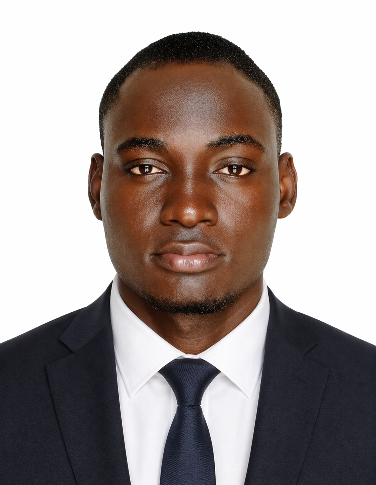

Géographie & Aménagement du Territoire
Spécialisé en évaluation environnementale et sociale, cartographie SIG et gouvernance climatique. Engagé pour une gestion durable des ressources naturelles en Afrique de l'Ouest.

À propos
Ma vocation est née sur le terrain — dans les écosystèmes côtiers du Bénin, entre la mangrove de la Bouche du Roy et les carrières du littoral. Comprendre comment les territoires se transforment, documenter ces mutations et proposer des solutions concrètes : c'est ce qui guide mon travail.
Géographe de formation, j'ai acquis une expertise opérationnelle en évaluation environnementale et sociale au sein de l'Agence Béninoise pour l'Environnement. Cette expérience m'a confirmé que rigueur scientifique et engagement citoyen se renforcent mutuellement.
Fondateur impliqué dans l'ONG Save Our Planet et lauréat des Eco Benin Awards 2024, je travaille à l'intersection de la recherche appliquée, de la géomatique et de la politique climatique, avec pour horizon le doctorat et la création d'un cabinet de conseil environnemental.
Formation
Expériences
Expertise
Retrouvez l'ensemble de mon parcours, mes compétences et mes références dans mon curriculum vitae au format Word, prêt à transmettre.
Format Word · Mis à jour 2026
Portfolio
Engagement terrain
Reconnaissances
Contact
Une collaboration, une opportunité, ou simplement échanger sur l'environnement ?